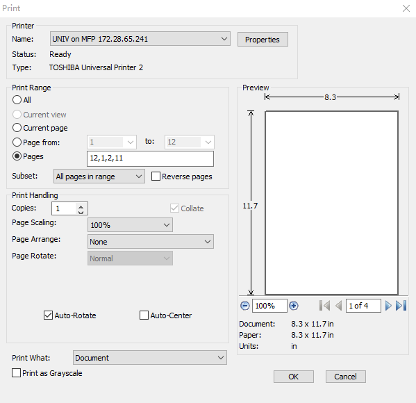
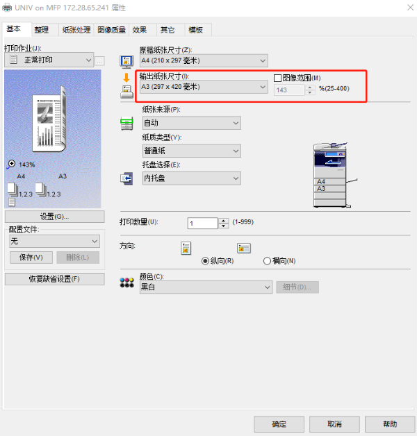
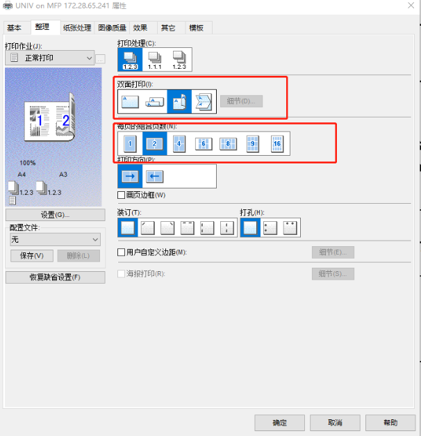

A4转A3中缝装订打印#
我们知道2张A4纸拼在一起就是一张A3，所以A4版面的材料，可以使用A3纸张来打印，中缝装订起来，美观大方，有书籍的观感。
步骤#
计算打印顺序#
将word导出成为pdf文档；将文件凑为偶数页面，就是说如果只有奇数页，就在最后插入一个空页面;
计算打印顺序：设页数为X，打印序列为：
X
1
2
X-1
X-2
3
4
X-3
X-4
5
6
X-5
...
最后一项为：
X-(X/2-1)+1
X/2-1
X/2
X-(X/2-1)
简而言之就是：12, 34, 56, 78 序列的前后插入X-1，X-2,X-3…序列，如X=12，打印序列就是：
12,1,2,11,10,3,4,9,8,5,6,7
如果x=8页，则打印顺序为：
8,1,2,7,6,3,4,5
打印设置#
打印软件设置（以Foxit Phantom为例）：

打印机软件设置（以惠普为例）：

